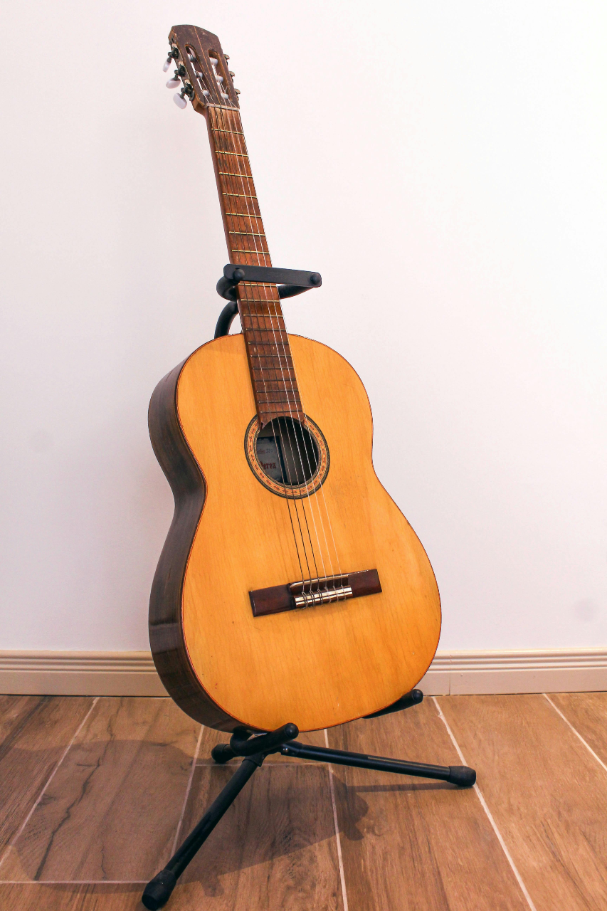
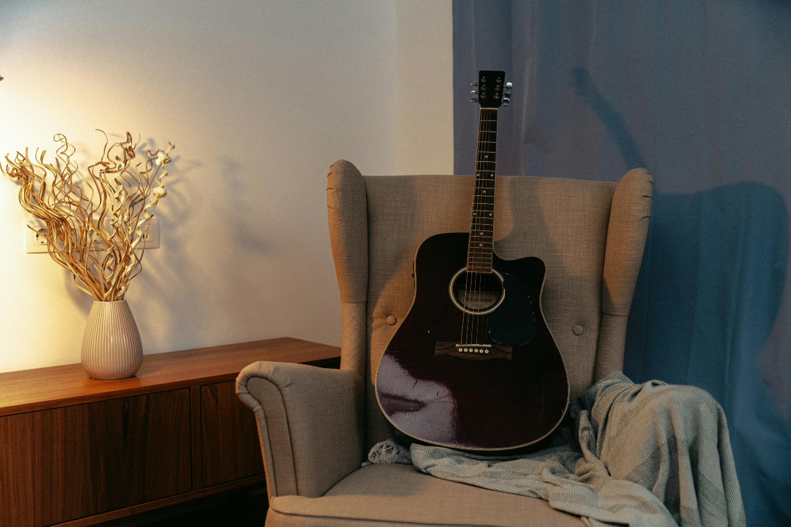
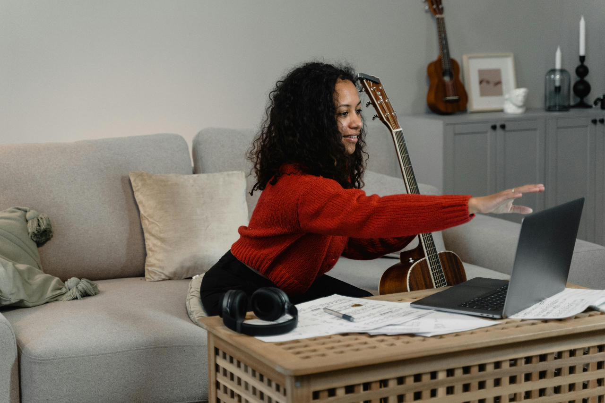

The Novice
My name is Stephanie Ijiogbe, self-proclaimed and true novice. I've been playing the guitar for about four years now, but yes, still a novice. (I briefly considered renaming this site "Playing Guitar: The Art of Remaining a Novice"). I've always loved music, but for the longest time, I never entertained the idea of making or playing it — I was satisfied just listening to it. But I've been enjoying my time so far, and I would actually encourage others to take on musical hobbies as well.
I've learned how to play some rather basic songs like Amazing Grace and Twinkle, Twinkle, and if you want to count Happy Birthday as one of them, be my guest. Though you and I will be there for the better part of an hour before I finish. While I mostly play the guitar, I've also been experimenting with my sister's violin. And while I currently have only one guitar (acoustic), if I get more serious about this hobby of mine, I might invest in another.
The Art of the Guitar

If you're unfamiliar with the instrument (you might think it strange but remember that not all of us have the same experiences), the guitar is a stringed instrument that makes sound by picking or strumming the strings. It typically has about six strings, but can apparently go up to twelve (which is news to me). There are different types of guitars as well. From acoustic to electric to classical, each created in their own way and offering their own unique sound.
Playing the guitar is a relatively popular hobby that allows musicians and average people alike to create and perform music. Some play for personal enjoyment, others play as a career, and the guitar is an instrument that can fit any style. Guitar playing typically involves techniques like strumming, fingerpicking, chord transitions, and slides, but beginners first learn basic chords and simple songs to get them started. But no matter the skill level, playing the guitar is an enriching and enjoyable experience for anyone (admittedly maybe not so much for the people listening to you when you first get started).
Best Times to Play
My favorite time to play is around nighttime, when the sun is beginning to set or when the sun has completely disappeared. I find it's the most quiet and everybody is beginning to settle down. It's when I've finished my tasks for the day, and I don't have any other obligations. Everyone has settled on an activity they're going to spend the night doing and I usually don't have to worry about them needing me for it since they haven't asked me yet. Everything is perfect.
When it comes to seasons, I reserve my guitar playing for the Spring and Summer. Autumn and Winter are two seasons I don't like engaging with (my ancestors did not prepare me for weather like that). Spring and Summer? Those seasons I can get behind. I especially love being huddled indoors while the clouds lose their minds outdoors, picking up the guitar by the window and just strumming whatever I feel like (if you ever get the chance, try it; it makes you feel like you're in a movie scene!). But the summer, with its clear, quiet nights, is something else entirely, where it feels like the entire world has gone still, and all you can hear are the strings of your guitar.
Best Locations to Play

I typically practice in my bedroom; it's where I'm most comfortable and I don't have to worry about being interrupted by anyone. And when you're a novice (like me), comfort is a really important thing, especially when you consider that everything else is about to get uncomfortable; my fingers were sore when I first got started. It won't sound great when you first start, so it's best to stay away from judging eyes and ears. Any location that offers the most peace and quiet is always the best option.
Sometimes though, when I'm home alone and the sun begins to set, I like to take my guitar to the backyard patio, under the gazebo for a little late-night strumming. I'm typically not trying to play any songs, but it's a lovely time to go over the chords I can remember and experiment on my own. I started out a bit self-conscious about the noise I was making (even though I really wasn't that loud), but then I remembered that my neighbors' dogs get to bark as much as they want, so what could be wrong with a bit of strumming? Evenings and nights have always been relaxing times for me, and pairing it with a nice patio, looking up at the night sky makes for the perfect combination.
How To Get Started

My guitar actually came with tutorial book. It taught me a few chords and some easy, popular songs as well like Twinkle, Twinkle and Happy Birthday. If you're able to purchase a deal like that, I recommend it. Since it'll be your first guitar, there really is no point in you getting one that absurdly expensive. It's the guitar you're using to know if it's a hobby you'd like to continue with and the one you'll make many mistakes with, so don't get one that'll make you regret the purchase or one you'll be too afraid to tweak.
I would also recommend YouTube videos. I tried using apps, but it seems like the really good ones hide behind paywalls, and this was not a hobby I was ready to pay for. So I watched a bunch of YouTube videos that taught more chords and melodies, and others that teach you how to play different songs. I would also advise to take it slow. Just because it's a song you like, it doesn't mean you should learn it. Some songs are harder to learn than others, so start easy and work your way up.
Why I Love the Guitar
I'm rather indecisive about everything I do. It gets to the point where I overthink things so much, I eventually just end up not doing anything. But one of the few things I didn't overthink was getting a guitar. It's why I love it so much. As one of the decisions I was able to go through with, it has a very special place in my heart. It's a weird origin story but I was rewatching one of my guilty pleasures and I saw one of the leads in the movie play the guitar, and I instantly wanted one. Most would call that an impulsive decision, and frankly, I'm surprised I even went through with the purchase. But from the first moment I held that guitar, I was already enamored with it.
I'm not very good and I didn't even buy it with my own money (if I had, then I'd definitely have to keep at it), but I keep coming back to it. And despite my slow learning, I'm still having a lot of fun. I still love to play; it hasn't gotten old yet and I doubt it will. I've been playing guitar for about four years now and each time I pick it up, I remember that it was one of the most exciting decisions I ever made. And the feeling it inspires only makes the session that more enjoyable.
AI Prompts
Used GPT-4o and asked the following questions:
What colors should I use to style my html page?
How can I style a section element?
If I have different sections on my page, how do make only one section show at a time using a nav bar?
I want my nav bar to move into different rows when the screen size changes. What are the different ways to accomplish that?
I don't want the rows to change with every small change in screen size.
What details can I include in the about me section of a guitar playing hobby site?
How would I center a divider between the items in my nav bar?
Do I have any grammatical errors?